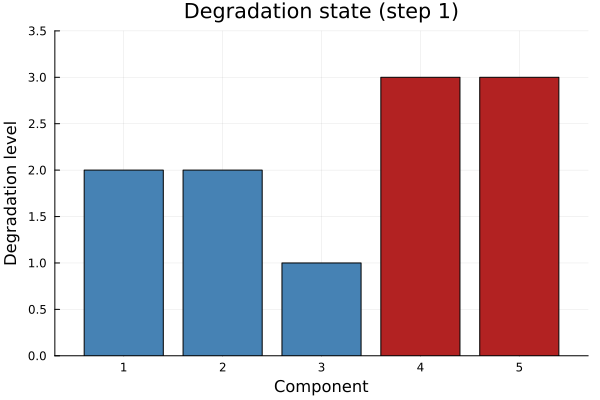
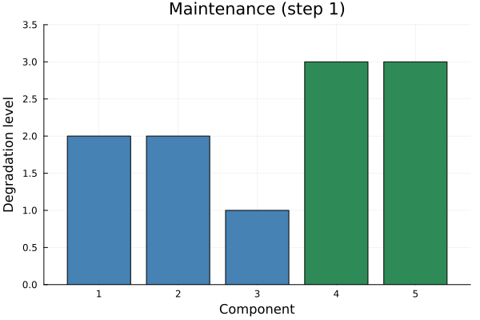
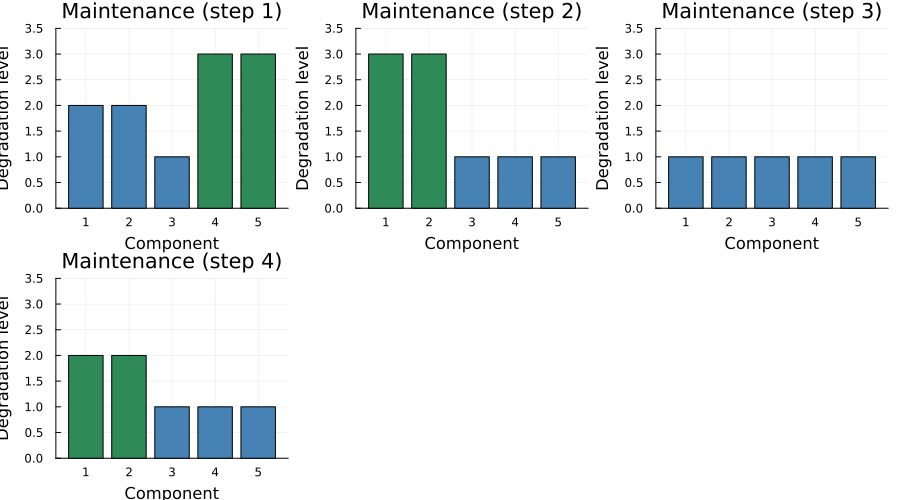

Maintenance
Decide which components to maintain at each step to minimize failure and maintenance costs: components degrade stochastically and the agent has limited maintenance capacity.
using DecisionFocusedLearningBenchmarks
using Plots
b = MaintenanceBenchmark(; N=5, K=2) # 5 components, maintain up to 2 per stepMaintenanceBenchmark(5, 2, 3, 0.2, 10.0, 3.0, 80)Observable input
Generate one environment and roll it out with the greedy policy to collect a sample trajectory. At each step the agent observes the degradation level of each component:
policies = generate_baseline_policies(b)
env = generate_environments(b, 1)[1]
_, trajectory = evaluate_policy!(policies.greedy, env)(253.0, DataSample{@NamedTuple{instance::Vector{Int64}}, @NamedTuple{reward::Float64, step::Int64}, Vector{Int64}, BitVector, Nothing}[DataSample(x=[1, 1, 1, 1, 2], y=Bool[0, 0, 0, 1, 1], instance=[2, 2, 1, 3, 3], reward=26.0, step=1), DataSample(x=[1, 1, 1, 1, 2], y=Bool[1, 1, 0, 0, 0], instance=[3, 3, 1, 1, 1], reward=26.0, step=2), DataSample(x=[1, 1, 1, 1, 2], y=Bool[0, 0, 0, 0, 0], instance=[1, 1, 1, 1, 1], reward=0.0, step=3), DataSample(x=[1, 1, 1, 1, 2], y=Bool[1, 1, 0, 0, 0], instance=[2, 2, 1, 1, 1], reward=6.0, step=4), DataSample(x=[1, 1, 1, 1, 2], y=Bool[0, 0, 0, 0, 0], instance=[1, 1, 1, 1, 1], reward=0.0, step=5), DataSample(x=[1, 1, 1, 1, 2], y=Bool[0, 0, 0, 0, 1], instance=[1, 1, 1, 1, 2], reward=3.0, step=6), DataSample(x=[1, 1, 1, 1, 2], y=Bool[1, 0, 1, 0, 0], instance=[2, 1, 2, 2, 1], reward=6.0, step=7), DataSample(x=[1, 1, 1, 1, 2], y=Bool[0, 0, 0, 1, 0], instance=[1, 1, 1, 2, 1], reward=3.0, step=8), DataSample(x=[1, 1, 1, 1, 2], y=Bool[0, 0, 0, 0, 0], instance=[1, 1, 1, 1, 1], reward=0.0, step=9), DataSample(x=[1, 1, 1, 1, 2], y=Bool[1, 0, 0, 0, 1], instance=[2, 1, 1, 1, 2], reward=6.0, step=10) … DataSample(x=[1, 1, 1, 1, 2], y=Bool[0, 0, 1, 1, 0], instance=[1, 1, 2, 2, 1], reward=6.0, step=71), DataSample(x=[1, 1, 1, 1, 2], y=Bool[0, 0, 0, 0, 0], instance=[1, 1, 1, 1, 1], reward=0.0, step=72), DataSample(x=[1, 1, 1, 1, 2], y=Bool[0, 0, 1, 0, 0], instance=[1, 1, 2, 1, 1], reward=3.0, step=73), DataSample(x=[1, 1, 1, 1, 2], y=Bool[0, 0, 0, 0, 0], instance=[1, 1, 1, 1, 1], reward=0.0, step=74), DataSample(x=[1, 1, 1, 1, 2], y=Bool[0, 0, 0, 1, 0], instance=[1, 1, 1, 2, 1], reward=3.0, step=75), DataSample(x=[1, 1, 1, 1, 2], y=Bool[0, 0, 0, 0, 0], instance=[1, 1, 1, 1, 1], reward=0.0, step=76), DataSample(x=[1, 1, 1, 1, 2], y=Bool[0, 0, 0, 0, 0], instance=[1, 1, 1, 1, 1], reward=0.0, step=77), DataSample(x=[1, 1, 1, 1, 2], y=Bool[0, 0, 1, 0, 0], instance=[1, 1, 2, 1, 1], reward=3.0, step=78), DataSample(x=[1, 1, 1, 1, 2], y=Bool[0, 0, 0, 0, 0], instance=[1, 1, 1, 1, 1], reward=0.0, step=79), DataSample(x=[1, 1, 1, 1, 2], y=Bool[0, 0, 0, 0, 0], instance=[1, 1, 1, 1, 1], reward=0.0, step=80)])The observable state at step 1: degradation levels per component (1 = new, n = failed):
plot_context(b, trajectory[1])
A training sample
Each step in a trajectory is a labeled tuple (x, θ, y) plus state and reward:
x: degradation state vector (values in1..nper component)θ: urgency score per component (predicted by model)y: which components are maintained at this step (BitVector of length N)instance: degradation state vectorreward: negative cost (maintenance and failure costs) at this step
One step with maintenance decisions (green = maintained, red = failed):
plot_sample(b, trajectory[1])
A few steps side by side showing degradation evolving over time:
plot_trajectory(b, trajectory[1:min(4, length(trajectory))])
DFL pipeline components
The DFL agent chains two components: a neural network predicting urgency scores per component:
model = generate_statistical_model(b) # two-layer MLP: degradation state → urgency scoresChain(
Dense(5 => 5), # 30 parameters
Dense(5 => 5), # 30 parameters
vec,
) # Total: 4 arrays, 60 parameters, 448 bytes.and a maximizer selecting the most urgent components for maintenance:
maximizer = generate_maximizer(b) # top-K selection among components with positive scoresDecisionFocusedLearningBenchmarks.Maintenance.TopKPositiveMaximizer(2)At each step, the model maps the current degradation state to an urgency score per component. The maximizer selects up to K components with the highest positive scores for maintenance.
Problem Description
Overview
In the Maintenance benchmark, a system has $N$ identical components, each with $n$ discrete degradation states (1 = new, $n$ = failed). At each step, the agent can maintain up to $K$ components. Maintained components are reset to state 1. Unmaintained components degrade stochastically.
Mathematical Formulation
State $s_t \in \{1,\ldots,n\}^N$: degradation level of each component.
Action $a_t \subseteq \{1,\ldots,N\}$ with $|a_t| \leq K$
Transition dynamics: For each component $i$:
- If maintained: $s_{t+1}^i = 1$
- If not maintained: $s_{t+1}^i = \min(s_t^i + 1, n)$ with probability $p$, else $s_t^i$
Cost:
\[c(s_t, a_t) = c_m \cdot |a_t| + c_f \cdot \#\{i : s_t^i = n\}\]
Objective:
\[\min_\pi \; \mathbb{E}\!\left[\sum_{t=1}^T c(s_t, \pi(s_t))\right]\]
Key Components
MaintenanceBenchmark
| Parameter | Description | Default |
|---|---|---|
N | Number of components | 2 |
K | Max simultaneous maintenance operations | 1 |
n | Degradation levels per component | 3 |
p | Degradation probability per step | 0.2 |
c_f | Failure cost per failed component | 10.0 |
c_m | Maintenance cost per maintained component | 3.0 |
max_steps | Steps per episode | 80 |
Instance Generation
Each instance has random starting degradation states uniformly drawn from $\{1,\ldots,n\}$.
Baseline Policies
| Policy | Description |
|---|---|
| Greedy | Maintains components in the last degradation state before failure, up to capacity |
DFL Policy
\[\xrightarrow[\text{State}]{s_t \in \{1,\ldots,n\}^N} \fbox{Neural network $\varphi_w$} \xrightarrow[\text{Scores}]{\theta \in \mathbb{R}^N} \fbox{Top-K (positive)} \xrightarrow[\text{Maintenance}]{a_t}\]
Model: Chain(Dense(N → N), Dense(N → N), vec): two-layer MLP predicting one urgency score per component.
Maximizer: TopKPositiveMaximizer(K): selects the $K$ components with the highest positive scores for maintenance.
This page was generated using Literate.jl.